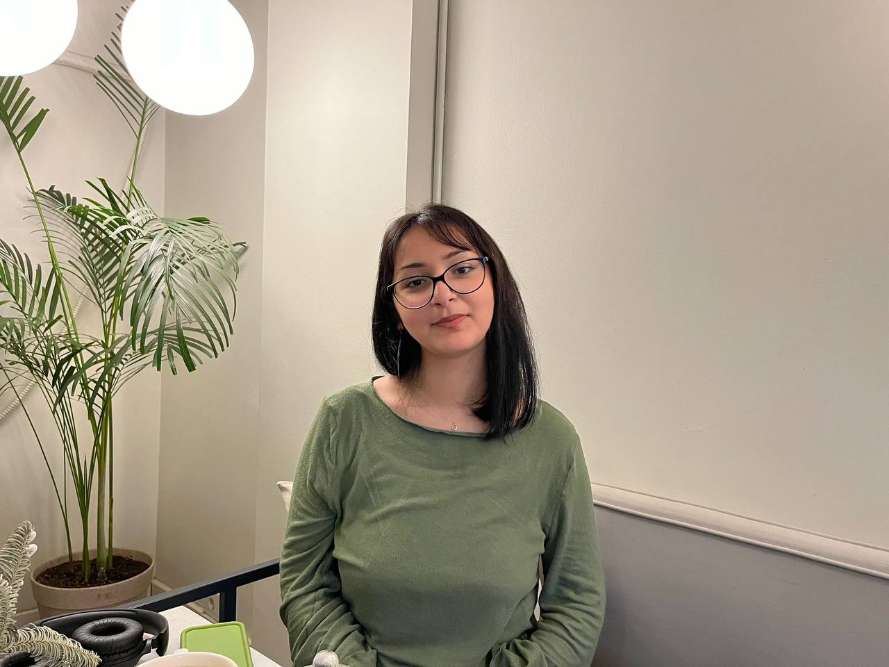

Benim Hakkımda Kısa bilgiler:
“Merhaba! Ben Hale, 17 yaşındayım. Astronomi, yazılım ve blog yazarlığıyla ilgileniyorum. Kariyerimi yazılım alanında şekillendirmeyi hedefliyor, özellikle frontend geliştirme üzerine çalışıyorum. Kodluyoruz'da gönüllüyüm ve aktif olarak yer alıyorum. Burada hem teknik becerilerimi geliştiriyor hem de topluluk içinde dayanışmayı güçlendiren projelerde rol alıyorum. Kodluyoruz’un İngiltere projesinde LinkedIn ve Medium ile ilgili atölyeler vermeye başlıyorum. Kodluyoruz benim tutkularımı destekleyen harika bir ortam ve burayı çok seviyorum! 💙 Bunun yanı sıra, Dev Codex ve Perseus Tech gibi topluluklarda teknolojiye ilgi duyan gençlerle birlikte gönüllülük faaliyetlerinde bulunuyorum. Hayal Gücü Merkezi Tohum ekibindeydim; burada projelere biz karar veriyorduk, beyin ekibindeydik. Stellar Lab’da gönüllü olarak projelerde yer aldım, jürilik yaptım ve pandemi döneminde ilkokul çocuklarına çevrimiçi astronomi atölyeleri verdim. İnsanlarla bilgi paylaşmayı, ekip çalışmasını ve yeni projeler üretmeyi seviyorum. 🚀 Ayrıca, engelli bireylerin toplumdan dışlanmamasını hedefleyen bir kurumda gönüllülük yapıyor, yabancı insanlarla güzel etkinlikler düzenliyorum. T3 Vakfı’nda da gönüllü olarak yer alıyorum. Teknoloji ve gönüllülük benim en büyük ilham kaynaklarımdan biri! ☘️💻”
Hobilerim:
Ukulele çalmak beni rahatlatıyor ve müziğin enerjisini hissetmemi sağlıyor 🎼 Yoga yapmak hem zihnimi dinlendiriyor hem de bedenimi güçlendiriyor 🧘♀️ Blog yazmak, düşündüklerimi paylaşmanın en iyi yolu. Kitap okumak ise yeni dünyalar keşfetmemi sağlıyor ve hayal gücümü besliyor. Plaktan şarkı dinlemek müziğe ayrı bir tat katıyor, o hafif cızırtıyı duymak bile hoşuma gidiyor. Fotoğraf çekmeyi ve anı koleksiyonu yapmayı seviyorum, her kare benim için özel bir anı saklıyor. Yeni şeyler denemek ve kendimi geliştirmek benim için önemli, bu yüzden fırsat buldukça farklı hobilerle ilgilenmeye çalışıyorum✨
Bana Nereden Ulaşabilirsiniz?